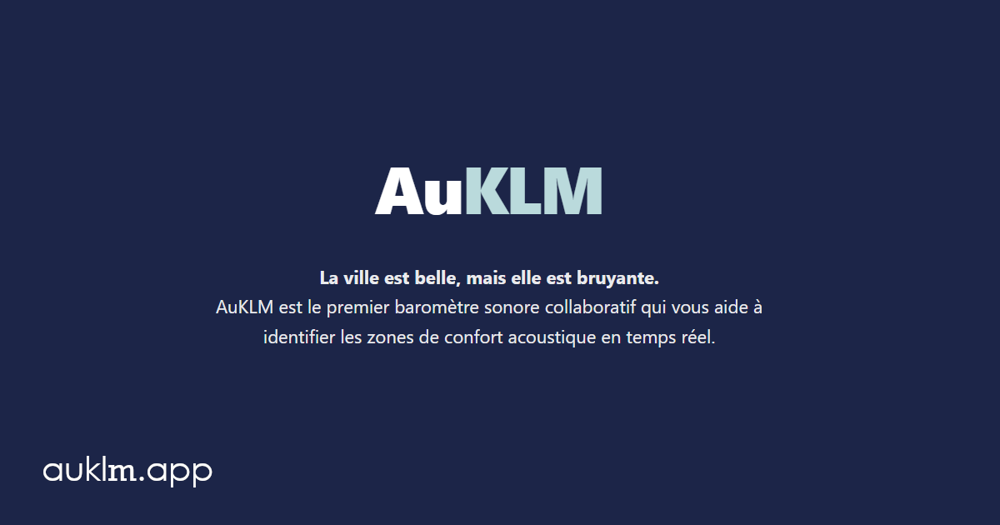

Le projet bénévole AuKLM part d'un constat simple : le bruit gâche trop souvent notre quotidien, et nous n'avons aucun moyen de le contrôler. Que ce soit pour travailler tranquillement, déjeuner en paix ou simplement souffler chez soi, nous avons tous besoin de repérer les zones bruyantes et de pouvoir le dire.
Une carte collaborative créée par vous
Le projet démarre tout juste. Dès que vous signalez une nuisance en un clic depuis l'accueil, vous alimentez une carte commune qui permet de :
- Repérer : situer les zones les plus bruyantes d'un quartier, directement signalées par ceux qui y vivent.
- Identifier : comprendre d'où vient le bruit (chantiers, terrasses, deux-roues...) et comment il évolue.
- Mesurer : tester le niveau sonore ambiant grâce à notre outil de mesure de décibels (encore en version bêta).
L'idée derrière AuKLM
Travaux surprises, terrasses bruyantes ou nuisances de voisinage : le bruit est partout. AuKLM vous permet d'alerter les autres en deux secondes, sans avoir besoin de créer un compte ni de remplir un long formulaire.
C'est un outil simple et citoyen pour rendre visibles les nuisances d'un quartier et s'entraider pour retrouver le calme.